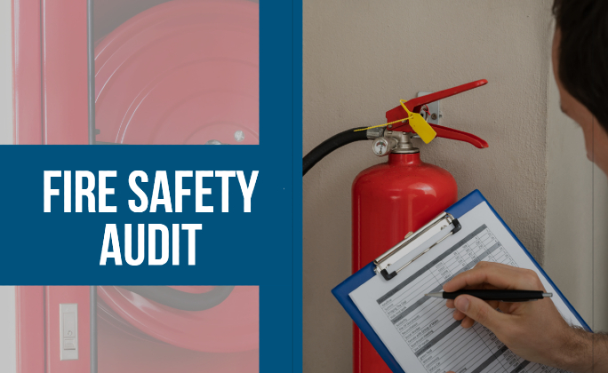
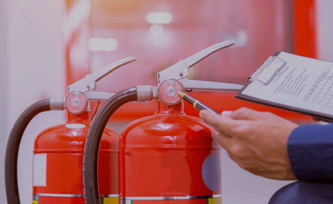

Fire at work is the most common of all work-related disasters. According to a recent study, a study carried out by the National Institute for Occupational Safety and Health, a large percentage of the Australian fire department employees had reported to have been exposed to a workplace fire or explosion at some point in their careers. Fire at work doesn't only cause physical harm, it also has an emotional impact on the victims, especially those whose workplaces are of a dangerous nature.
When a fire starts at work, it can have devastating consequences. It can leave you needing to find new employment, leave you wondering how you will pay your bills, or simply leave you wanting to leave work altogether. Fire at work is dangerous, but it is preventable. This blog is designed to help you get answers to your questions about fire at work, get answers to your questions about fire at work, or simply give you answers to your questions about fire at work.
Fire at work is a serious threat that can cause serious damage and hurt people, and it is a common cause of death in Australia. Luckily, as a firefighter, you are likely to see a wide range of fires. In this blog post, we look at the most common causes for fire at work. Most fire at work incidents are due to a faulty electrical item. While some of these faulty items can be fixed by a qualified electrician, others will need to be replaced.

Cigarette smoking is one of the leading causes of house fires, accounting for more than one-third of all home fire deaths. The risk of fire increases with the number of cigarettes smoked, the depth of the burning cigarette ash, and the type of cigarette. Despite these facts, more than two million people smoke in Australia, with about half of them trying to quit each year.
Gas leaks are a very common cause of fire at work. The problem is that gas leaks are often hard to find, so it is important to do so immediately. However, this is not an easy task, as there are many places where gas leaks could occur. The main areas are usually the gas pipe connecting the gas meter to the gas main. But the majority of the time leaks are found in the meter itself.
Gas leaks are often not visible, so you may not even realize the problem exists. Once a gas leak starts, it can quickly spread to other areas in your home. The cost of gas leaks is expensive, both to repair and to replace. You can lessen your risk by learning how to recognize a gas leak, and practicing what to do if one appears.

Arson is defined as the criminal act of igniting targets for the purpose of causing damage. It is also known as the crime of "fire starting", which is the act of getting a fire started without the intent to cause damage. For example, a torch is used for illumination, but if the person using the torch intends to cause damage to the place where they are used, then it would be arson.
When a fire breaks out at a workplace, it is a widespread emergency response scenario. The fire departments, emergency response teams and the leadership of the company come together to extinguish the fire and investigate the cause. You can get a fire safety audit at Metrofire. In the end, any fire that causes damage or injury is reported to the authorities and the company has to take responsibility for everything that happened.